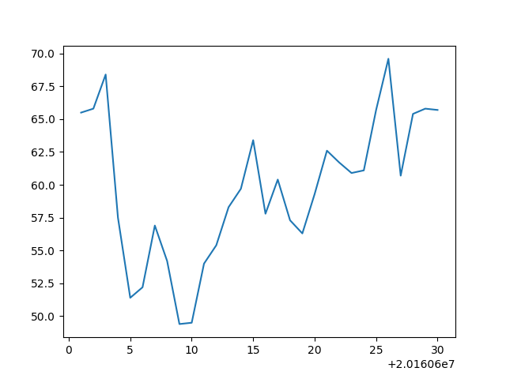
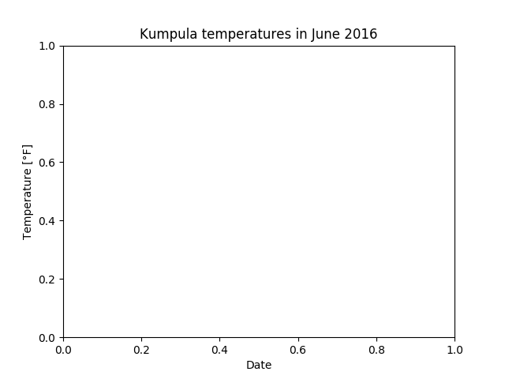
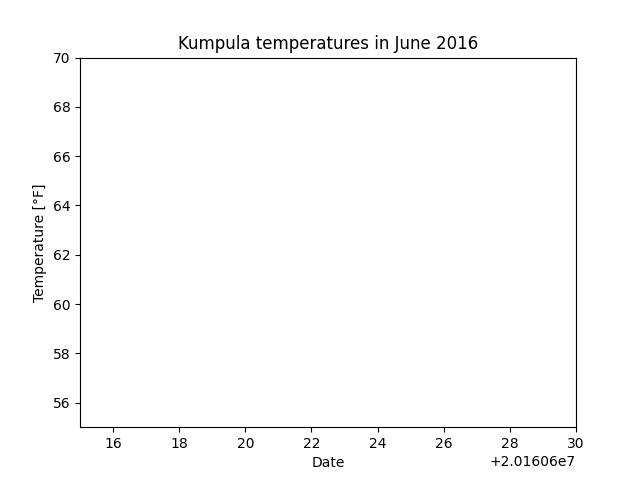

Plotting with Matplotlib¶
Though there are many options for plotting data in Python, we will be using Matplotlib. In particular, we will be using the pyplot module in Matplotlib, which provides MATLAB-like plotting. The reason for this is simple: Matplotlib is the most common module used for plotting in Python and many examples of plotting you may find online will be using Matplotlib.
Downloading the data and preparing¶
- For our first lesson plotting data using Matplotlib we will again be using the weather data file from Lesson 5.
- Save a copy of this file in your home directory or a directory for the materials for this week’s lesson.
- The data file contains observed daily mean, minimum, and maximum temperatures from June 2016 recorded from the Kumpula weather observation station in Helsinki. It is derived from a data file of daily temperature measurments downloaded from the US National Oceanographic and Atmospheric Administration’s National Centers for Environmental Information climate database.
- We expect something like 30 lines of data in the data file.
- If you have not already started Spyder you should do so now. You can find directions on how to open Spyder at the start of Lesson 1.
- Navigate in Spyder to the directory where you have stored the downloaded data file. You can do this most easily in Spyder by using the filesystem browser above the File/Variable explorer panel. Click on the file folder to select the directory where you would like to work, click Open, then click on the listed file path that is now displated beside the file folder and press Enter.
Spyder plots in separate windows¶
By default, Spyder plots will be shown in the IPython console, but this can be annoying when saving and interacting with the plots we make. We can change how plots are displayed in Spyder to have them show up in a separate window by changing the preferences.
- Start by opening the Spyder preferences.
- Mac users can go to python -> Preferences… in the menubar
- Linux/Windows users can go to Tools -> Preferences
- In the Preferences window, click on IPython console on the left side of the window, then on the Graphics tab.
- Under Graphics backend, select Automatic for the backend.
- Restart Spyder.
Plotting data with Matplotlib¶
To start, we will need to import both Pandas and pyplot.
In [1]: import pandas as pd In [2]: import matplotlib.pyplot as plt
Note again that we are renaming the modules when we import them. Perhaps now it is more clear why you might want to rename a module on import. Having to type
matplotlib.pyplotevery time you use one of its methods would be a pain.With our modules imported, we now can read in the data file in the same way we had for Lesson 5.
In [3]: dataFrame = pd.read_csv('Kumpula-June-2016-w-metadata.txt', skiprows=8)
As you may recall, we will now have a Pandas DataFrame with 4 columns.
In [4]: print(dataFrame.columns) --------------------------------------------------------------------------- NameError Traceback (most recent call last) <ipython-input-4-a60faba7eaca> in <module>() ----> 1 print(dataFrame.columns) NameError: name 'dataFrame' is not defined
OK, so let’s get to plotting! We can start by using the Matplotlib
plt.plot()function.In [5]: x = dataFrame['YEARMODA'] --------------------------------------------------------------------------- NameError Traceback (most recent call last) <ipython-input-5-1903336fb770> in <module>() ----> 1 x = dataFrame['YEARMODA'] NameError: name 'dataFrame' is not defined In [6]: y = dataFrame['TEMP'] �����������������������������������������������������������������������������������������������������������������������������������������������������������������������������������������������������������������������������������������������������������������������������������--------------------------------------------------------------------------- NameError Traceback (most recent call last) <ipython-input-6-67865b05ba4e> in <module>() ----> 1 y = dataFrame['TEMP'] NameError: name 'dataFrame' is not defined In [7]: plt.plot(x, y) ������������������������������������������������������������������������������������������������������������������������������������������������������������������������������������������������������������������������������������������������������������������������������������������������������������������������������������������������������������������������������������������������������������������������������������������������������������������������������������������������������������������������������������������������������������������--------------------------------------------------------------------------- NameError Traceback (most recent call last) <ipython-input-7-d0d1dfa5badf> in <module>() ----> 1 plt.plot(x, y) NameError: name 'x' is not defined In [8]: plt.show()
If all goes well, you should see the plot above.
OK, so what happened here? Well, first we assigned the values we would like to plot, the year and temperature, to the variables
xandy. This isn’t necessary, per se, but does make it easier to see what is plotted. Next, it is perhaps pretty obvious thatplt.plot()is a function in pyplot that produces a simple x-y plot. However, just like most variables in Python, creating the plot simply stores the information about the plot in memory. The plot is not displayed on the screen until you typeplt.show().We can make our plot look a bit nicer and provide more information by using a few additional pyplot options.
In [9]: plt.plot(x, y, 'ro--') --------------------------------------------------------------------------- NameError Traceback (most recent call last) <ipython-input-9-7f7aa66b70da> in <module>() ----> 1 plt.plot(x, y, 'ro--') NameError: name 'x' is not defined In [10]: plt.title('Kumpula temperatures in June 2016') ������������������������������������������������������������������������������������������������������������������������������������������������������������������������������������������������������������������������������������������������������������������������Out[10]: Text(0.5, 1.0, 'Kumpula temperatures in June 2016') In [11]: plt.xlabel('Date') �������������������������������������������������������������������������������������������������������������������������������������������������������������������������������������������������������������������������������������������������������������������������������������������������������������������������������������Out[11]: Text(0.5, 0, 'Date') In [12]: plt.ylabel('Temperature [°F]') �������������������������������������������������������������������������������������������������������������������������������������������������������������������������������������������������������������������������������������������������������������������������������������������������������������������������������������������������������������������Out[12]: Text(0, 0.5, 'Temperature [°F]') In [13]: plt.show()
This should produce the plot above.
Now we see our temperature data as a red dashed line with circles showing the data points. This comes from the additional
ro--used withplt.plot(). In this case,rtells theplt.plot()function to use red color,otells it to show circles at the points, and--says to use a dashed line. You can usehelp(plt.plot)to find out more about formatting plots. Better yet, check out the documentation for plt.plot() online. We have also added a title and axis labels, but their use is straightforward.Adding text to plots can be done using
plt.text().In [14]: plt.text(20160604.0, 68.0, 'High temperature in early June') Out[14]: Text(20160604.0, 68.0, 'High temperature in early June')
This will display the text “High temperature in early June” at the location x = 20160604.0 (i.e., June 4, 2016), y = 68.0 on the plot. You would need to type the other plotting commands and
plt.show()again to display the plot.Changing the plot axes can be done using the
plt.axis()function.In [15]: plt.axis([20160615, 20160630, 55.0, 70.0]) Out[15]: [20160615, 20160630, 55.0, 70.0]
The format for
plt.axis()is[xmin, xmax, ymin, ymax]enclosed in square brackets (i.e., a Python list). Here, the x range would be changed to the equivalents of June 15, 2016 to June 30, 2016 and the y range would be 55.0-70.0. The complete set of commands to plot would thus be:In [16]: plt.plot(x, y, 'ro--') --------------------------------------------------------------------------- NameError Traceback (most recent call last) <ipython-input-16-7f7aa66b70da> in <module>() ----> 1 plt.plot(x, y, 'ro--') NameError: name 'x' is not defined In [17]: plt.title('Kumpula temperatures in June 2016') �������������������������������������������������������������������������������������������������������������������������������������������������������������������������������������������������������������������������������������������������������������������������Out[17]: Text(0.5, 1.0, 'Kumpula temperatures in June 2016') In [18]: plt.xlabel('Date') ��������������������������������������������������������������������������������������������������������������������������������������������������������������������������������������������������������������������������������������������������������������������������������������������������������������������������������������Out[18]: Text(0.5, 0, 'Date') In [19]: plt.ylabel('Temperature [°F]') ��������������������������������������������������������������������������������������������������������������������������������������������������������������������������������������������������������������������������������������������������������������������������������������������������������������������������������������������������������������������Out[19]: Text(0, 0.5, 'Temperature [°F]') In [20]: plt.text(20160604.0, 68.0, 'High temperature in early June') ��������������������������������������������������������������������������������������������������������������������������������������������������������������������������������������������������������������������������������������������������������������������������������������������������������������������������������������������������������������������������������������������������������������Out[20]: Text(20160604.0, 68.0, 'High temperature in early June') In [21]: plt.axis([20160615, 20160630, 55.0, 70.0]) ��������������������������������������������������������������������������������������������������������������������������������������������������������������������������������������������������������������������������������������������������������������������������������������������������������������������������������������������������������������������������������������������������������������������������������������������������������������������������������Out[21]: [20160615, 20160630, 55.0, 70.0] In [22]: plt.show()

Note that the text does not appear here because of the axis range.
In addition to line plots, there are many other options for plotting in Matplotlib. Bar charts are one option, which can be used quite similarly to line plots.
In [23]: plt.bar(x, y) --------------------------------------------------------------------------- NameError Traceback (most recent call last) <ipython-input-23-a6615192c27a> in <module>() ----> 1 plt.bar(x, y) NameError: name 'x' is not defined In [24]: plt.title('Kumpula temperatures in June 2016') ����������������������������������������������������������������������������������������������������������������������������������������������������������������������������������������������������������������������������������������������������������������Out[24]: Text(0.5, 1.0, 'Kumpula temperatures in June 2016') In [25]: plt.xlabel('Date') �����������������������������������������������������������������������������������������������������������������������������������������������������������������������������������������������������������������������������������������������������������������������������������������������������������������������������Out[25]: Text(0.5, 0, 'Date') In [26]: plt.ylabel('Temperature [°F]') �����������������������������������������������������������������������������������������������������������������������������������������������������������������������������������������������������������������������������������������������������������������������������������������������������������������������������������������������������������Out[26]: Text(0, 0.5, 'Temperature [°F]') In [27]: plt.text(20160604.0, 68.0, 'High temperature in early June') �����������������������������������������������������������������������������������������������������������������������������������������������������������������������������������������������������������������������������������������������������������������������������������������������������������������������������������������������������������������������������������������������������Out[27]: Text(20160604.0, 68.0, 'High temperature in early June') In [28]: plt.axis([20160615, 20160630, 55.0, 70.0]) �����������������������������������������������������������������������������������������������������������������������������������������������������������������������������������������������������������������������������������������������������������������������������������������������������������������������������������������������������������������������������������������������������������������������������������������������������������������������Out[28]: [20160615, 20160630, 55.0, 70.0] In [29]: plt.show()
You can find more about how to format bar charts on the Matplotlib documentation website.
Saving plots created using Matplotlib done several ways, but the easiest is simply to click on the disk icon on the pyplot window when a plot is displayed, as shown below.

This brings up a familiar file saving window. Matplotlib plots can be saved in a number of useful file formats, including JPEG, PNG, PDF, and EPS, as you can see below.

PNG is a nice format for raster images, and EPS is probably easiest to use for vector graphics.
{kind=link}
{kind=link}
{kind=link}
Attention
Plotting like the “pros”
We’re only introducing a tiny amount of what can be done with pyplot. In most cases, when we would like to create some more complicated type of plot, we would search using Google or visit the Matplotlib plot gallery. The great thing about the Matplotlib plot gallery is that not only can you find example plots there, but you can also find the Python commands used to create the plots. This makes it easy to take a working example from the gallery and modify it for your use.

The Matplotlib plot gallery
Your job in this task is to:
- Visit the Matplotlib plot gallery
- Find an interesting plot and click on it
- Copy the code you find listed beneath the plot on the page that loads
- Paste that into an IPython window or the IPython console in Spyder to reproduce the plot.
After you have reproduced the plot, you are welcome to try to make a small change to the plot commands and see what happens.
For this, it may be easiest to save a copy of the commands in a .py script file that you can edit and run.
Attention
Task 3: Plotting only part of a dataset
For this task, you should use the values for arrays x and y calculated earlier in this part of the lesson, and use plt.axis() to limit the plot to the following x and y ranges: x = June 7-14, y = 45.0 to 65.0.
- What do you expect to see in this case?
- Note: In order to get the plot to display properly, you will need to first type in the
plt.plot()command, thenplt.axis(), and finallyplt.show().